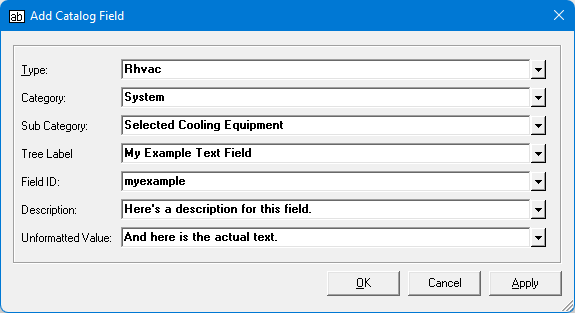

Adding Custom FieldsProposal Maker Main Topics (List) Proposal Maker Menus (List) |
  
|
Proposal Maker Main Topics (List) Proposal Maker Menus (List)
Adding Custom FieldsProposal Maker Main Topics (List) Proposal Maker Menus (List) |
|
To add a custom field to the Field Catalog, click the Add Field icon (  ) in that window's toolbar, then fill in the fields on the Add Catalog Field dialog, shown below.
) in that window's toolbar, then fill in the fields on the Add Catalog Field dialog, shown below.

There are two types of user-defined fields you can add:
1.Field with Plain Text: You fill in the Unformatted Value input in the above dialog. This is the simplest kind of custom field. When you insert the field into a document the text takes on the surrounding font and other formatting characteristics that already exist on the document.
2.Field with Rich Text: You select some text and/or pictures on the document and click "Edit | Save Block to Catalog." The Add Catalog Field will then open with the Unformatted Value input grayed out. The Unformatted Value input will say, "[Rich Text]." The new field you create will consist of the block of text you selected, and will include all the font and other formatting properties of your original selection.
Inputs on the Add Catlog Field dialog:
Type: You can add a custom field to your own custom type or to one of the stock types included with the program (such as the "Audit" type).
Category: Select the category for the custom field.
Sub Category: Determines where in the tree you want the new field to show up. Note that custom fields are shown in the Field Catalog tree bold black text, while stock fields are shown in bold blue text.
Tree Label: Specifies the label used in the tree for the new field.
Field ID: Specifies the unique, internal identifier that will be used to keep track of this field when used on a document as well as in the catalog. It must be a unique ID and can consist of alphameric characters only (A to Z or a to z).
Description: Provides a place for you to describe the purpose of the new field. Unlike all the above inputs, you can change this text even after the field has been created by entering text in the Description property on the Field Properties window.
Unformatted Value: Provides a place for you to enter the value of the field, if you are NOT entering a formula for this field. You can enter either text or a number. If you enter a number, you can set the formatting properties for the number (such as the number of decimal places to show) later on the Field Properties window. You can change this text even after the field has been created by editing the Unformatted Value property on the Field Properties window.